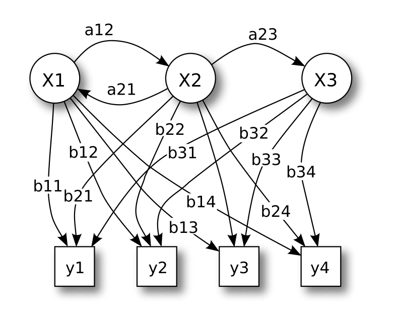

Introduction

HMM are stochastic methods that are used to model sequential data such as speech and gesture recognition. Both the underlying process which is hidden is stochastic and the observable process. Only a first order HMM will be considered.
Under the Markov property, the next state is only dependent on the current state of the system. Such states may not be known and may be hidden from the observer as only the output values are observable. When an event is generated from a state, the model moves into a new state based on its transition probabilities. The term hidden is commonly used to indicate that many different state sequences can generate the same observed sequence of events.
The HMM is formally defined by the triple: \[\lambda = (A,B,\pi) \]
where A is the transition matrix, B the emission matrix and \( \pi \) the initial state vector. Let \(S\) be the set of states, \(V\) the set of observations, \(Q\) a fixed state sequence of length \(T\) and \(O\) a corresponding observation sequence. The transition probabilities are then given by:
and the emission probabilities are given by:
and the initial state probabilities by:
\[ \pi = P(q_1 = s_i) \]
Given a sequence of observations, we want to compute the probability of an observation sequence given the model.
The probability of the observation sequence \( O \) for a state sequence is given by: \[ P(O|Q,\lambda) = \prod^T_{t=1} P(o_t | q_t,\lambda) \] The probability of the state sequence is simply a product of the state path: \[ P(Q|\lambda)= \pi_{q_1}a_{q_1 q_2} \cdots a_{q_{T-1} q_T} \] Thus the probability of the observations given the model can be calculated by: \[ P(O|\lambda) = \sum_Q P(O|Q,\lambda) P(Q|\lambda) \]
The forward algorithm calculates this efficiently by caching previous calculations.
Training
A variety of learning algorithms exist which compute the structure of the model and also calculate the emission and transmission matrices. The Baum-Welch is an unsupervised learning algorithm which re-estimates the parameters \( (A,B,\pi) \). The training problem can be solved in terms of joint events and state variables.
The joint variable \( \xi_t(i,j) = P(q_t = S_i, q_{t+1} = S_j|S, \lambda) \) is given by: \[ \frac{\alpha_t (j) a_{ij} b_j (O_{t+1}) \beta_{t+1}(j) }{\sum_{k=1}^N \sum_{l=1}^N \alpha_t (k) a_{kl} b_l (O_{t+1}) \beta_{t+1}(l) } \]
The state variable \( \gamma_t(i) = P(q_t = S_i | O, \lambda) \) is given by: \[ \gamma_t(i) = \frac{\alpha_t (i) \beta_t(i)}{\sum_{j=1}^N \alpha_t (j) \beta_t (j)} \]
Upon which the parameters can be updated (by the Baum-Welch method).
The updated state transition probability is then given by: \[ a^u_{ij} = \frac{\sum_{t=1}^{T-1} \xi_t (i,j)}{\sum_{t=1}^{T-1} \gamma_t (i)} \]
The updated emission probability is given by: \[ b^u_j (k) = \frac{\sum^T_{t=1,o_t = v_k} \gamma_t (j)}{\sum^T_{t=1} \gamma_t (j)} \]
The updated initial probability by: \[ \pi^u_i = \gamma_1 (i) \]
Where the superscript u denotes the updated parameter.
However this only covers the case where the model is updated upon a single observation. How do we update the model to match multiple observations?. Xiaolin Li has a combinatorial method to update the HMM with multiple observations: Training Hidden Markov Models with Multiple Observations - A Combinatorial Method, in which he and his colleagues describe a general method.
We will cover only a specific case.
In order to operate on multiple observations the independence assumption was made, that is (such an assumption does not have to be made, but this will simplify things): \[ P(O | \lambda) = \prod_{k=1}^K P(O^{(k)} | \lambda) \] For which the update rules according to Levinson are:
-
State transition: \[ a^u_{mn} = \frac{\sum_{k=1}^K \sum_{t=1}^{T_k -1 } \xi_t^{(k)} (m,n)}{\sum_{k=1}^K \sum_{t=1}^{T_k-1} \gamma_t^{(k)}(m)} \]
-
Observation emission: \[ b^u_n (m) = \frac{\sum_{k=1}^K \sum_{t=1, o_t^{(k)} = v_m}^{T_k -1 } \gamma_t^{(k)} (n)}{\sum_{k=1}^K \sum_{t=1}^{T_k-1} \gamma_t^{(k)}(n)} \]
-
Initial state: \[ \pi^u_n = \frac{1}{K} \sum_{k=1}^K \gamma_1^{(k)}(n) \]
Composition
HMMs have been applied with some degree of success to music composition. A system has been developed for producing a counterpoint line to a cantus firmis in the style of Palestrina Farbood2001. Another approach utilizes a HMM for chorale melody harmonization Allan2004.